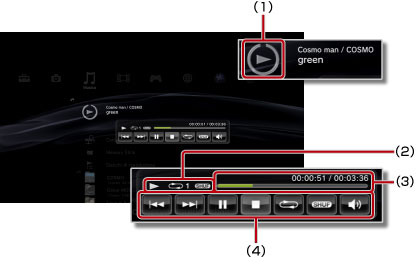

Musica > Utilizzo del pannello di controllo in formato mini
Utilizzo del pannello di controllo in formato mini
Utilizzare il pannello di controllo in formato mini per eseguire diverse funzioni durante la riproduzione della musica.
1. |
Durante la riproduzione di musica, premere il tasto PS. |
||||||||
|---|---|---|---|---|---|---|---|---|---|
2. |
Utilizzare i tasti di direzione per selezionare l'icona per il contenuto musicale in riproduzione sotto 
|
Note
- L'icona per il contenuto musicale in riproduzione è visualizzata direttamente sotto l'icona
 (Musica).
(Musica). - Il pannello di controllo in formato mini può essere nascosto premendo il tasto
 durante la riproduzione di musica.
durante la riproduzione di musica.
Precedente

Consente di tornare all'inizio del brano corrente o precedente.
Seguente
Consente di passare all'inizio del brano successivo.
Pausa
Arresta temporaneamente la riproduzione.
Ferma
Consente di interrompere la riproduzione e nascondere il pannello di controllo in formato mini.
Casuale
Consente di riprodurre le tracce in ordine casuale.
Ripeti
Consente di riprodurre ripetutamente le tracce. È possibile selezionare una di tre modalità di ripetizione (mostrate sotto) premendo il tasto  .
.
 |
Consente di riprodurre ripetutamente una traccia. |
|---|---|
|
Consente di riprodurre ripetutamente tutte le tracce. |
| Nessuna visualizzazione | Consente di annullare la riproduzione ripetuta e di riprodurre tutte le tracce in ordine. |
Regolazione del volume
Consente di regolare il livello di uscita del volume delle tracce riprodotte sotto (Musica). È possibile selezionare uno dei nove livelli.
Nota
L'uscita audio può essere distorta se il livello di volume è troppo alto. In questo caso, abbassare il livello.